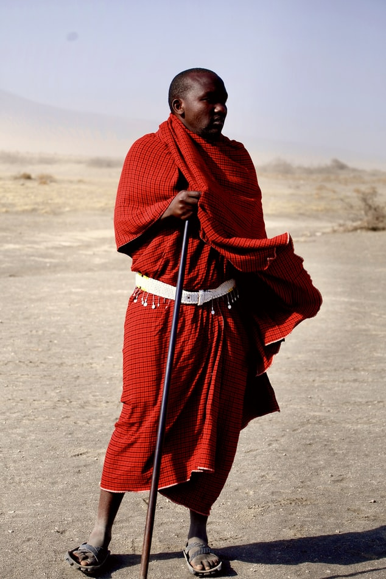
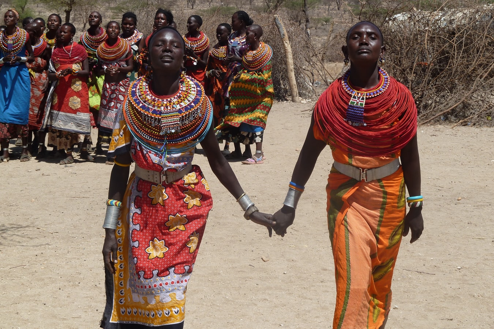
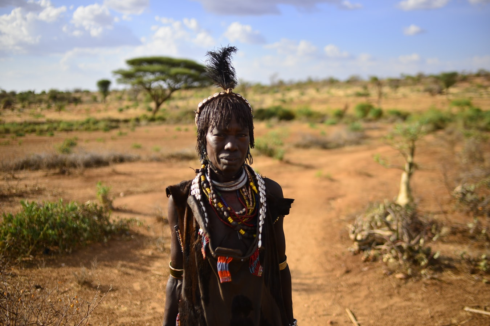

We love Meat
The Maasai inhabit the African Great Lakes region and arrived via the South Sudan.[9] Most Nilotic speakers in the area, including the Maasai, the Turkana and the Kalenjin, are pastoralists, and are famous for their fearsome reputations as warriors and cattle-rustlers.[9] The Maasai and other groups in East Africa have adopted customs and practices from neighboring Cushitic-speaking groups, including the age set system of social organization, circumcision, and vocabulary terms."[
MAASAI FROM TANZANIA
MAASAI FROM KENYA
MAASAI FROM SOUTH SUDAN
